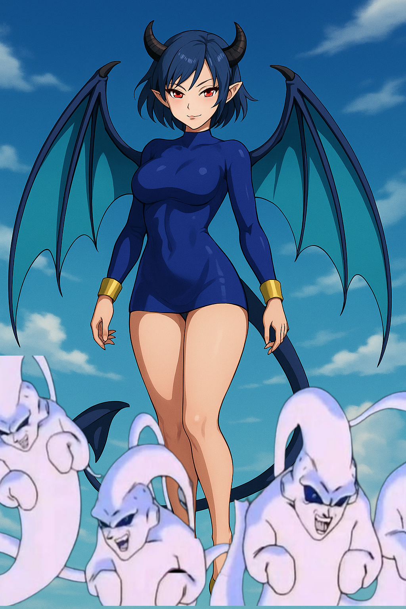

Succubus Vanessa


Overview
Succubus Vanessa is one of Vanessa’s alter egos — the extreme embodiment of her unfulfilled personal desires, awakened through demonic energy. She is a seductive, dangerous predator who seeks out powerful male warriors across Conton City to enslave and use as living shields and trophies.
Appearance
Succubus Vanessa has a sleek and alluring appearance that mixes elegance with demonic menace:
- **Hair:** Short, smooth dark blue hair cut just above the shoulders with long angled bangs framing her face
- **Eyes:** Narrow, glowing red eyes with a confident, teasing expression
- **Skin:** Light brown with a soft warm undertone
- **Body:** Slender yet curvy; long toned legs, tight waist. Like all Vanessa variants, she is a curvy petite woman with a popping bottom on her.
- **Outfit:**
- Form-fitting midnight blue bodysuit that covers her from neck to upper thighs
- Gold wrist cuffs
- Sexy white flats with light blue soles
- Bare legs from the upper thighs down
- **Demonic Features:** Smooth black curved horns, large bat-like wings with dark blue membranes and black edging, long pointed demon tail matching her bodysuit, slightly pointed ears, and sharp nails
- **Aura:** Surrounded by playful pinkish hearts and small floating ghost-like Majin minions that orbit her, enhancing her otherworldly aura
Personality
- Flirtatious, theatrical, and proud
- Easily bored, always seeking stronger prey
- Clumsy at times, but becomes extremely focused when challenged
- Arrogant — assumes her enslaved “cast” will do all her fighting for her
- If they fail, she angrily discards or punishes them
Powers and Abilities
- Seductive Aura – Lowers targets’ guard, distracting them
- Possession – Can take over opponents’ bodies (e.g. Cooler)
- Soul-Link Curse – Once defeated, She will mount the enemy, riding him into a bond with her while she delivers her cursed chant, to the built-in tune that is the chorus of Janet Jackson’s Truly song:
* If she feels pain, they feel it
* If she dies, they die permanently — she revives due to her immortality
* This forces her victims to protect her at all costs
- Enhanced Speed – Normally her strongest advantage, allowing hit-and-run tactics
- Energy Drain – Steals stamina and ki from linked victims to empower herself
- Combat Adaptation – Grows stronger the longer she toys with an opponent
Ghost Minions
- **Spectral Servants:** Succubus Vanessa is constantly surrounded by a swarm of spectral ghosts of varying sizes that float around her body.
- **Telepathic Control:** The ghosts obey her through telepathy, reacting instantly to her thoughts and desires.
- **Infinite Summoning:** She can summon an unlimited number of them at will.
- **Contact Detonation:**
- Small Ghosts – Fast, relentless, and constantly track their target until they collide and detonate. Their explosions cause light damage but are difficult to evade due to their speed.
- Large Ghosts – Slower and more visible, but their explosions deal heavy damage and disrupt enemy attacks or guard attempts.
- **Signature Attack — Phantom Burst:**
# She summons a large tracking purple energy orb.
# When the orb contacts its target, it initiates a delayed explosion process that causes continuous damage over several seconds.
# At the start of the explosion phase, she summons 5 of her largest ghosts, which dive at the victim one after another.
# If all 4–5 hit, the damage is devastating and almost always fatal.
# However, if the victim survives, it means they are powerful enough to be “worthy” — and she will spare them… only to begin her binding ritual on their weakened body.
The ghosts also defend her during her ritual, circling her body and attacking anyone who approaches. If she is injured during the ritual, the ghosts become enraged and launch at her attacker until they are destroyed.
Weaknesses
- Overconfident in her slaves’ strength, rarely fights seriously until forced
- Easily distracted by lust and spectacle
- When alone, struggles against coordinated groups
- Link curse can be broken if her victim willingly rejects her, though this is rare
Lore
Origins
Succubus Vanessa was born as an alter ego from the depths of Vanessa’s unfulfilled personal desires. The persona grew stronger through demonic ki, taking shape as a seductive predator that thrives on conquest.
The Rose Goku Black Incident
Her first cast member was Goku Black (Rose). Believing his godly speeches, Vanessa flaunted him as her ultimate protector. However, without his scythe, Rose underperformed, failing to stop the hero patrollers. Vanessa was furious as she was overrun and manhandled, realizing she still had to fend for herself. She swore vengeance, deciding to take many more men to serve as her living defense, and promised Rose that he would suffer as she expanded her “cast.”
The Cooler Incident
Seeking a stronger slave, Vanessa next targeted Cooler. She encountered him while consoling her latest victim and ambushed him. Despite her speed, Cooler proved even faster, forcing her into a frantic chase. Cooler narrowly escaped her possession attempts, humiliating her. This incident showed her growing desperation to build a reliable roster of enslaved protectors.
The Broly Incident
While wandering Conton City, she found a massive modified Broly. Instantly obsessed, she hypnotized and enslaved him, declaring:
- “I have taken a part in your being inside me. Now you will be one of my slaves.”
- “If I get hurt, you’ll share my pain. If I should die, you will die. However, I myself will return to life.”
She proudly called him her “boyfriend” and took him into battle as her trophy. However, the “Walmart Broly” performed terribly, leaving her screaming with frustration. Disgusted, she abandoned him, vowing to seek stronger prey.
The Hit Incident
.
 In a dramatic PvP confrontation, Vanessa targeted the legendary assassin
**Hit**, unleashing her signature **Soul-Link Curse** to bind him as an
unwilling protector. Though the binding succeeded — making Hit the
metaphysical safety net for any lethal blow — he proved absurdly inept
at guarding her. Most of the time, he merely stood idly with his hands
in his pockets, only reacting when **someone attacked him directly**. As
a result, Vanessa had to fend for herself much of the time, turning what
should’ve been a tactical advantage into a comedy of errors.
In a dramatic PvP confrontation, Vanessa targeted the legendary assassin
**Hit**, unleashing her signature **Soul-Link Curse** to bind him as an
unwilling protector. Though the binding succeeded — making Hit the
metaphysical safety net for any lethal blow — he proved absurdly inept
at guarding her. Most of the time, he merely stood idly with his hands
in his pockets, only reacting when **someone attacked him directly**. As
a result, Vanessa had to fend for herself much of the time, turning what
should’ve been a tactical advantage into a comedy of errors.
This incident underscores the flaw in Vanessa’s concept of “perfect slaves”: even if a binding is successful, the bound target’s competence (or lack thereof) can dramatically affect how useful they are. The Hit Incident highlights the tension between her power and the absurd, unpredictable behavior of mortal allies.
- First appearance: “Vanessa takes Hit – Xenoverse 2 PvP short”
- Role: Bound protector (ineffective in practice)
- Status: Active (unless broken in future lore)
The Binding Ritual (+18 True version)
When she performs her soul-binding ritual, the victim must be defeated or too weak to resist. As soon as he locks eyes with her, the **screen begins swirling**, pulling the world inward toward her glowing red eyes. The **chorus of Janet Jackson’s “Truly”** begins to play softly in the background, specifically the part where she sings:
> “…so crazy ’bout you, you… > wanna get away with you, you…”
As the music plays, she climbs onto him and begins riding him while holding unwavering eye contact. Without blinking or breaking her stare, she recites the incantation in sync with her movements:
> **“I have taken a part in your being inside me. > Now you will be one of my slaves. > You will obey and protect me. > If I get hurt, you'll share my pain. > If I should die, you will die. > However, I myself will return to life.”**
At climax, a burst of purple light engulfs them. The swirl fades, and the song cuts off mid-line as the soul-link seals. If interrupted before completion, the swirl and music stop abruptly, and her eyes dim back to normal, leaving her enraged and disoriented.
During this entire ritual, her ghosts circle her, creating a perimeter and detonating on any attacker to protect their mistress until the binding is complete.
Relationships
- Vanessa: Her base self. Succubus Vanessa is the embodiment of Vanessa’s buried lust, pride, and hunger for admiration.
- Goku Black (Rose): Her first victim. He failed her expectations, and she uses him as punishment while seeking stronger men.
- Cooler: Nearly became her second victim; resisted her possession but remains on her list.
- Broly: Briefly enslaved as her “boyfriend,” then discarded for weakness.
- Victoria Black: Views her as an obstacle and a rival influence on Vanessa’s psyche.
Trivia
- If she dies, any men linked to her soul will also die permanently — while she revives.
- She considers her roster of enslaved men her “cast.”
- She becomes much stronger when “entertained” or emotionally aroused by combat.
External Links
- TheSaiyanVictoria on YouTube
- TheSaiyanVictoria on Instagram
- Community Creations Hub
- OC Character Template
Category:Original Characters Category:TheSaiyanVictoria Universe Category:Saiyans Category:Demons